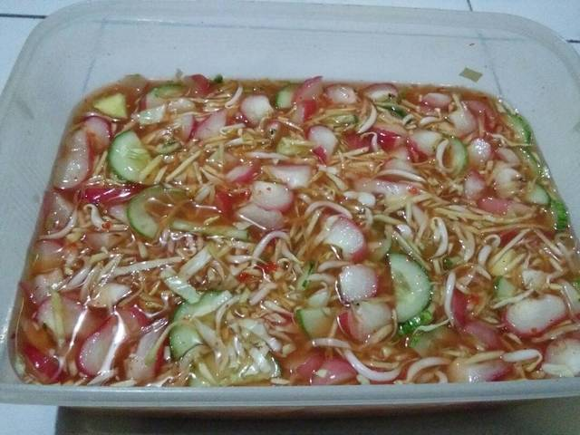
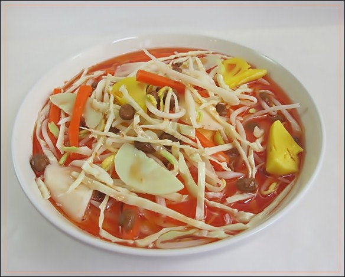

Rujak Cuka

Masih ada lagi makanan khas Bandung kali ini adalah rujak cuka. Makanan khas Bandung ini juga cukup populer karena enaknya. Makanan khas Bandung ini cukup berbeda dengan rujak pada umumnya, karena makanan khas Bandung ini adalah makanan tradisional yang terbuat dari campuran berbagai macam sayuran atau buah dan dibubuhi bumbu rujak serta ditambah cuka agar aroma makanan ini lebih sedap.

Harganya sendiri tidak membuat dompet menipis, bisa kurang dari Rp 10.000.